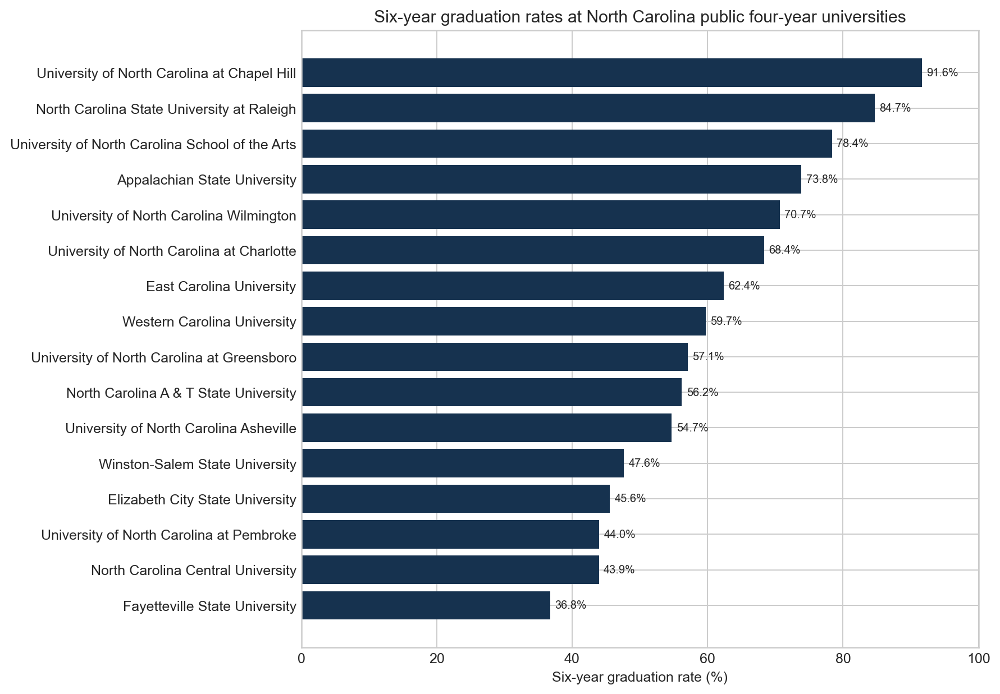
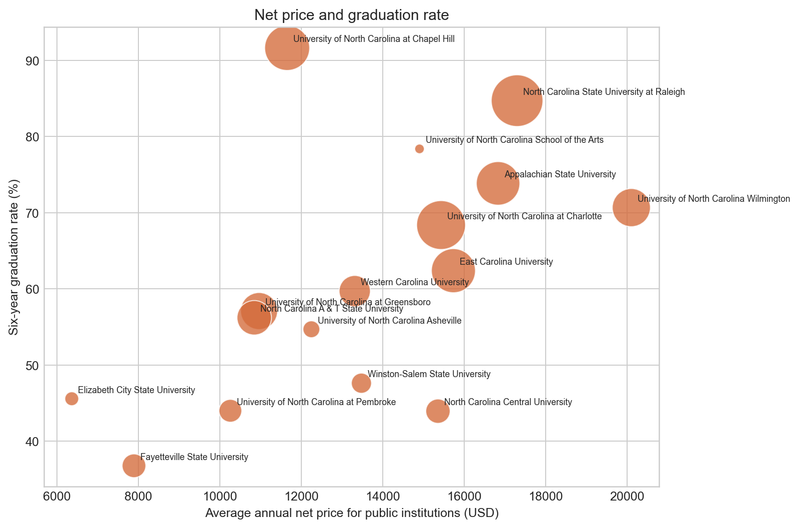

Chief Operating Officer
EcoMacintosh
Helped manage a technology resale and refurbishment company, supporting nearly $2 million in completed sales while advancing sustainable technology practices.
Data Science & Business Administration
I am a University of North Carolina at Charlotte student interested in data, business growth, and practical technology.
About me
I am a second-year engineering student at UNC Charlotte studying Data Science and Business Administration, with an expected graduation date of May 2028. My experience spans technology resale, operations, marketing, and community involvement. I am especially interested in using data to understand real problems, support better decisions, and build sustainable growth.
Outside class, I have led operations at EcoMacintosh, helped startups and emerging artists through Druxy Marketing, competed in DECA, volunteered in my community, and played varsity tennis. I am developing a portfolio that reflects both technical curiosity and a practical approach to business.
Experience
Helped manage a technology resale and refurbishment company, supporting nearly $2 million in completed sales while advancing sustainable technology practices.
Built a marketing firm that supported startups and emerging music artists with digital marketing, branding, and growth strategy.
Data Science and Business Administration. Expected graduation: May 2028.
Project 1 · Exploratory data analysis
Research question: How do average net price and six-year graduation rates compare among public four-year universities in North Carolina?
College affordability and student completion are closely related to the choices students and families make. This project compares institutional-level measures to describe variation across North Carolina's public four-year universities.
The U.S. Department of Education College Scorecard API supplied institutional records. Each row represents one institution. The analysis filters to North Carolina public institutions where a bachelor's degree is the predominant award, then examines average net price and the overall six-year graduation rate.
Records missing either key outcome were removed because a direct comparison requires both measures. Graduation rates were converted from proportions to percentages. This choice creates a clear comparison set but may exclude schools whose reporting differs.


Institutional averages conceal differences among students and programs. Net price is not the same as a student's actual out-of-pocket cost, and graduation rates may not capture transfer students or part-time pathways. The project avoids ranking institutions as simply better or worse and treats the findings as descriptive.
The data show meaningful variation in both cost and completion. A higher net price alone cannot explain a graduation rate. A next step would include student demographics, aid, retention, and program-level outcomes to better understand the differences.
AI disclosure: OpenAI Codex assisted with website organization, Python scaffolding, and draft prose. I reviewed the work and remain responsible for verifying the analysis and citations.